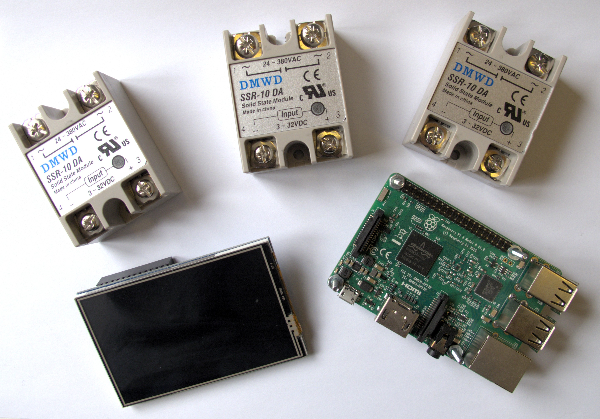
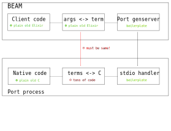
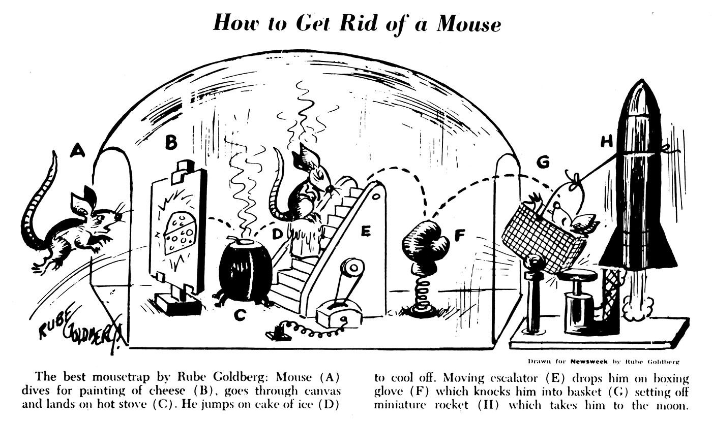
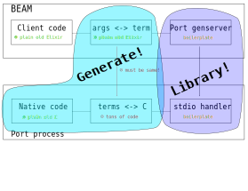

class: center, middle # Clixir (or: How to abuse Elixir macros for fun and profit) --- # Intro: yours truly ??? TODO insert https://worditout.com/user/1681934/settings/f178cacb3ba578bc3f36b0ec0cb0543e when fixed Source word cloud (years of language / 3) C C C C C C C C C C Java Java Java Java Java Java Perl Perl Perl Python Python Python Python Python Smalltalk Smalltalk Smalltalk Smalltalk Uniface Progress Fortran Prolog Pascal x86-asm x86-asm 68k-asm r4000-asm Scala Scala C++ C++ C++ PHP Ruby Elixir sh DCL --- # Intro: PagerDuty ??? TODO insert logo cloud or other tag cloud of our tech stack Source word cloud (importance, legacy status) Elixir Elixir Elixir Elixir Kafka Kafka Kafka MySQL MySQL MySQL AWS AWS AWS JS JS JS Chef Chef Nomad Nomad Consul Consul Phoenix Phoenix React React Terraform Ruby Rails Scala Ember --- # Background  ??? --- # Requirements ??? First animate no-x-or-qt, then opengl-es logo, overlay NanoVG demo on top --- # NIFs and Ports ??? --- # Using ports: sending arguments ``` bytes = :erlang.term_to_binary("world") Port.command(my_port, bytes) ``` ??? Elixir side is trivial --- # Using ports: decoding arguments ```c static void hello(const char *buf, unsigned short len) { char message[65536]; long message_len; int index = 0; assert(ei_decode_binary(buf, &index, message, &message_len) == 0); message[message_len] = '\0'; fprintf(stderr, "Hello, %s!\n", message); } ``` ??? C side not really --- # Using ports: encoding responses ```c static void make_window() { char response[65536]; int response_index = 0; GLFWwindow *window = ...; // actually make window ei_encode_version(response, &response_index); ei_encode_tuple_header(response, &response_index, 2); ei_encode_pid(response, &response_index, &pid); ei_encode_tuple_header(response, &response_index, 2); ei_encode_atom(response, &response_index, "ok"); ei_encode_longlong(response, &response_index, (long long) window); fwrite(response, response_index, 1, stdout); } ``` --- # Using ports: decoding responses ``` {:ok, handle} = :erlang.binary_to_term(bytes) ``` --- # Putting it all together  --- # Let's go wild  ??? Where we talk about what we want to accomplish TODO Rube Goldberg? --- # Let's go wild  ??? Diagram from putting it all together with overlay. --- # An Example ```elixir defmodule Example do use Clixir @clixir_header "example" def_c hello(message) do cdecl "char *": message # I am C code! fprintf(stderr, "Hello, %s!\n", message) end end ... # Somewhere in your application code Example.hello("world") ``` ??? Compiling this generates a C executable and Elixir glue code. --- # Stepping through: Clixir startup ``` def init([]) do app = Application.get_env(:clixir, :application) Logger.info("Starting clixir process from application #{app}") clixir_bin = Application.app_dir(app, "priv/clixir") port = Port.open({:spawn, clixir_bin}, [{:packet, 2}, :binary, :exit_status]) {:ok, %State{port: port}} end ``` ??? "Packet" means we send 2 byte lengths first. This makes boundary checking and memory allocation simple. --- # Stepping through: Elixir code ``` def hello(message) do Clixir.Server.send_command(Clixir.Server, {:Elixir_Example_hello, message}) end ``` --- # Stepping through: Clixir server ``` def send_command(pid, command) do :ok = GenServer.cast(pid, {:send, command}) end def handle_cast({:send, command}, state) do Logger.debug("sending message #{inspect command}") bytes = :erlang.term_to_binary(command) Port.command(state.port, bytes) {:noreply, state} end ``` --- # Stepping through: Clixir dispatch ``` void clixir_read_loop() { char buffer[65536]; while (1) { // simplified... unsigned short size = read_packet_size(); read(STDIN_FILENO, buffer, size); handle_command(buffer, size); } } ``` --- # Stepping through: Clixir dispatch ``` void handle_command(command, length) { // simplified ... ei_term term = decode_term(command); dispatch_command(term); } ``` --- # Sidebar: gperf A perfect hash function is a hash function that has no collisions. * `gperf` generates a perfect hash function from input ```c Elixir_Example_hello, _dispatch_Elixir_Example_hello ``` * maps the name into the generated dispatch code in 2 memory lookups --- # Stepping through: Generated C ```c static void _dispatch_Elixir_Example_hello(const char *buf, unsigned short len, int *index) { char message[BUF_SIZE]; long message_len; assert(ei_decode_binary(buf, index, message, &message_len) == 0); message[message_len] = '\0'; // recognize this bit?? fprintf(stderr, "Hello, %s!\n", message); } ``` --- # Returning values ``` def_c abs(value, pid) do cdecl long: [value, result] cdecl erlang_pid: pid if value < 0 do result = value * -1 else result = value end {pid, {:ok, result}} end ``` ??? Some ugliness is shining through here. --- # Returning values ```c static void _dispatch_Elixir_Example_abs(const char *buf, unsigned short len, int *index) { erlang_pid pid; long result; long value; assert(ei_decode_long(buf, index, &value) == 0); assert(ei_decode_pid(buf, index, &pid) == 0); if (value < 0) { result = value * -(1); } else { result = value; } char response[BUF_SIZE]; int response_index = 0; ei_encode_version(response, &response_index); ei_encode_tuple_header(response, &response_index, 2); ei_encode_pid(response, &response_index, &pid); ei_encode_tuple_header(response, &response_index, 2); ei_encode_atom(response, &response_index, "ok"); ei_encode_long(response, &response_index, result); write_response_bytes(response, response_index); } ``` --- # Returning values ``` def handle_info({_port, {:data, data}}, state) do stuff = :erlang.binary_to_term(data) Logger.debug("Received response #{inspect stuff}") dispatch_message(stuff) {:noreply, state} end defp dispatch_message({pid, response}) when is_pid(pid) do send(pid, response) end ... ``` Sync = async request + async response, very Erlang! --- # Recap (above diagrams, with checkmarks) --- # Current status --- # Uderzo --- # So what about... (picture of hardware) --- <video class="full-image" autoplay="true"> <!--width="320" height="240" controls--> <source src="nerves-demo.mp4" type="video/mp4"> </video>